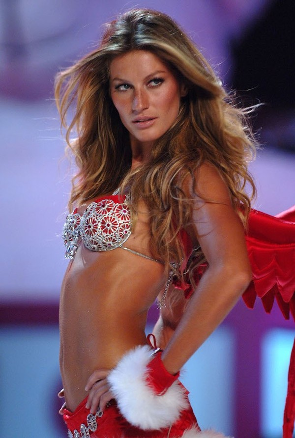

O desfile foi gravado no dia 9 de novembro de 2005, exibido no dia 6 de dezembro e reexibido no dia 13 de dezembro de 2005, na cidade de Nova York, nos EUA.
Victoria's Secret Fashion Show é um desfile de moda anual de uma marca de lingerie e pijamas conhecida como Victoria's Secret.
O desfile teve algumas modelos mundiais como as Angels: Adriana Lima, Gisele Bündchen, Alessandra Ambrosio, Heidi Klum, karolina Kurková e Tyra Banks.
Artistas: Chirs Botti, Ricky Martin, Seal e Drumlin da Universidade.
Naquele ano, foi usado por Gisele Bündchen o sutiã de fantasia "Sexy Splendor Fantasy Bra", que teve um valor estimado de US$ 12.500.000
